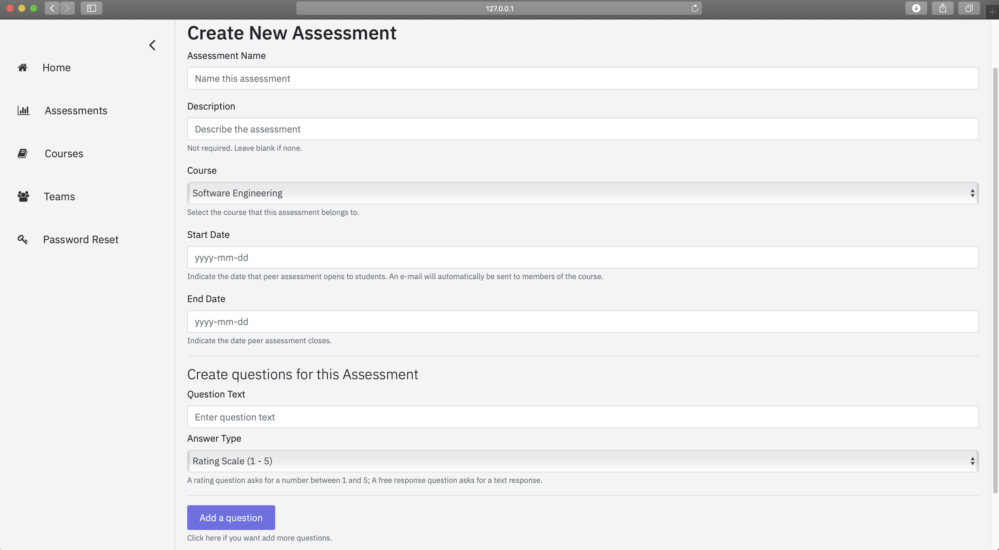

Time
Spring 2020
Description
Eagles Peer Evaluation System is a software that allows professors to create peer evaluations and students to evaluate each other. Professors can easily manage courses, teams, and created peer evaluations. Students can fill out peer evaluations. Professors will see aggregated results once students finish their peer evaluations. Students will see their score and comments once professors release the results.
Presentation of some interfaces
Login Page

Team Management Page

Assessment Creation
Assessment Management